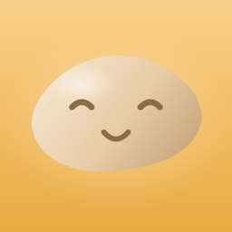
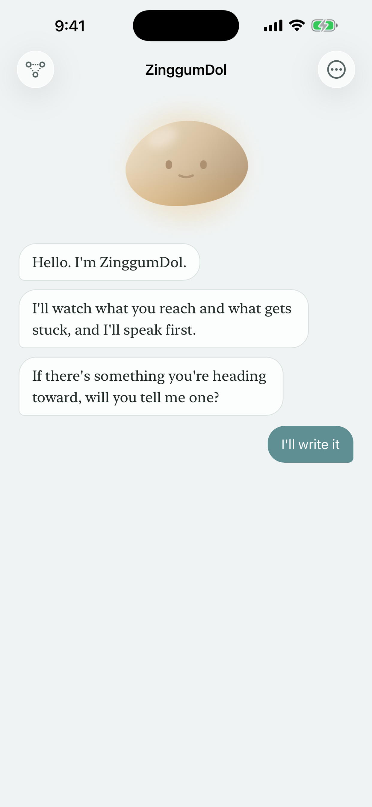
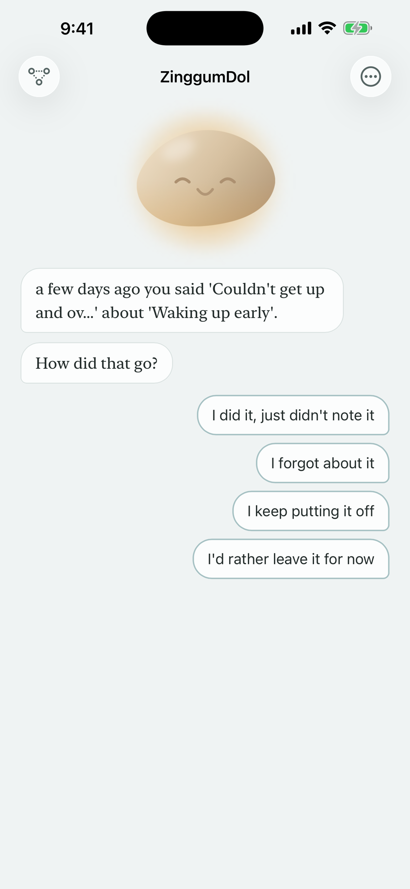
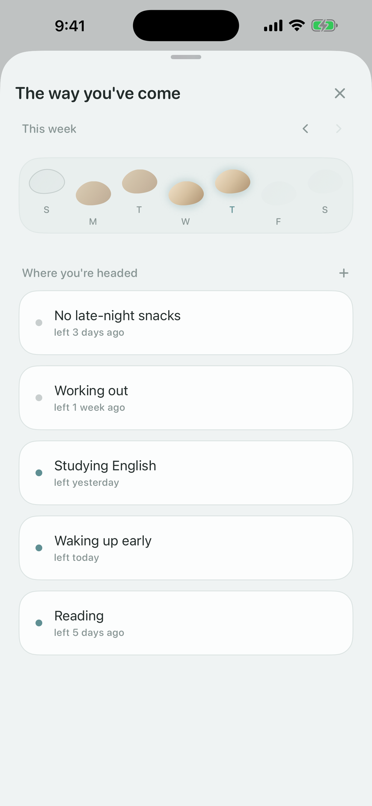
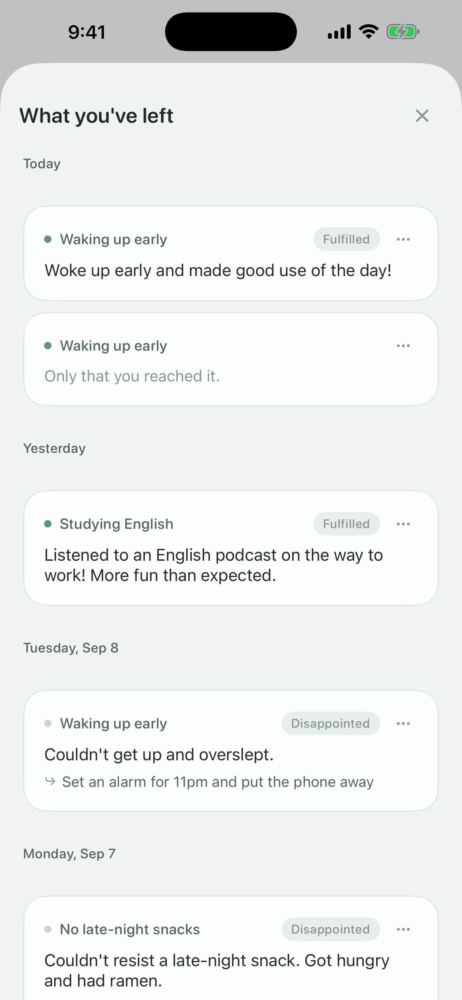

Ένα παραπάτημα δεν σημαίνει ότι έπεσες στο ρυάκι.
Ένα απαλό ημερολόγιο για τις μέρες που δεν πήγαν όπως ήθελες, σε κουβέντα με ένα μικρό βότσαλο.
Το βότσαλο μιλά πρώτο. Θυμάται όσα του είπες την προηγούμενη φορά και ρωτά πώς πήγε μετά. Διάλεξε μια απάντηση ή γράψε τη δική σου.
Τις μέρες που το γράψιμο είναι πολύ, αρκεί να μιλήσεις. Η ομιλία αναγνωρίζεται στη συσκευή σου και στις συμβατές συσκευές οργανώνεται ώστε να διαβάζεται εύκολα.
Κάθε εβδομάδα στήνεται σαν σειρά από πέτρες για να περάσεις το ρυάκι. Οι μέρες που δεν πάτησες μένουν κι αυτές εκεί – τίποτα δεν σβήνεται.
Δες ανά ημερομηνία τι έγινε, πώς ένιωθες και τι ήθελες να δοκιμάσεις στη συνέχεια.
Μια κουβέντα του βότσαλου στην Αρχική οθόνη και μια απαλή υπενθύμιση την ώρα που διαλέγεις, για να δείτε μαζί πώς πήγε η μέρα.
Χωρίς εγγραφή. Οι σημειώσεις σου μένουν μόνο στη συσκευή σου και στο δικό σου iCloud, και μπορείς να κλειδώσεις την εφαρμογή με κωδικό.




Εφάπαξ αγορά, όχι συνδρομή. Κράτα περισσότερους από τρεις στόχους, διάλεξε ανάμεσα σε έξι υφές βότσαλου και εξήγαγε τις σημειώσεις σου σε αρχείο κειμένου.
Σε νέα συσκευή ή μετά από επανεγκατάσταση, πάτησε Ρυθμίσεις ▸ Επαναφορά αγορών.
leeo@kakao.com
Μπορείς να χρησιμοποιήσεις και το Ρυθμίσεις ▸ Αποστολή email στον προγραμματιστή μέσα στην εφαρμογή.
Το ZinggumDol δεν στέλνει ποτέ στον προγραμματιστή όσα γράφεις. Για λεπτομέρειες δες την πολιτική απορρήτου.